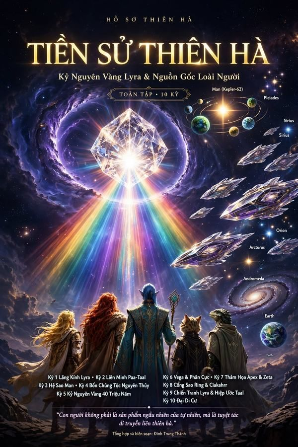
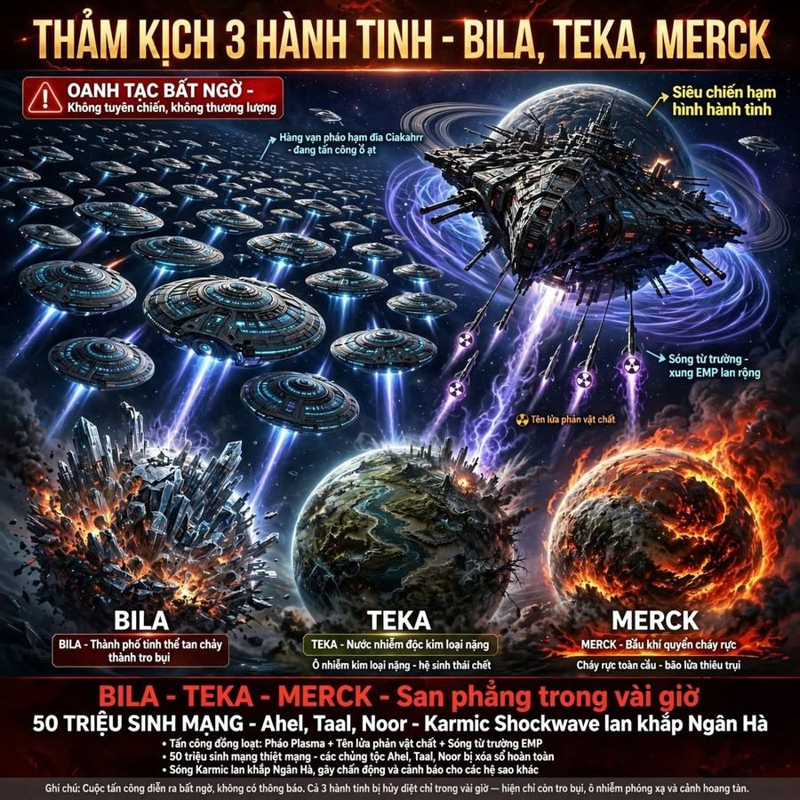
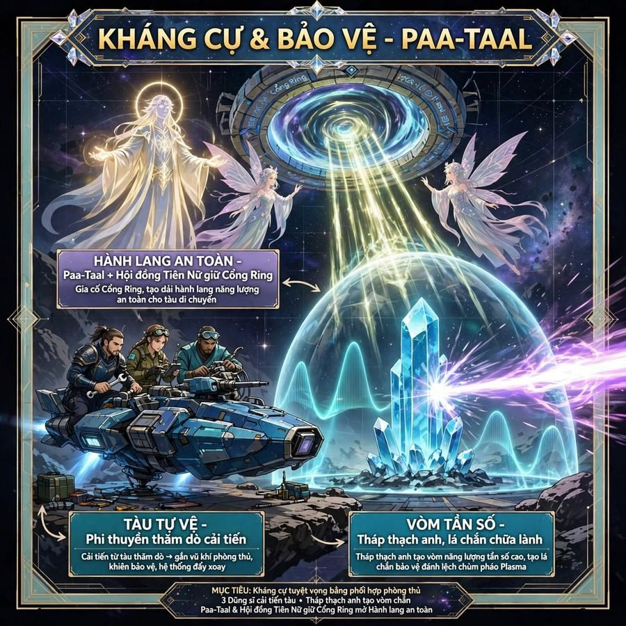
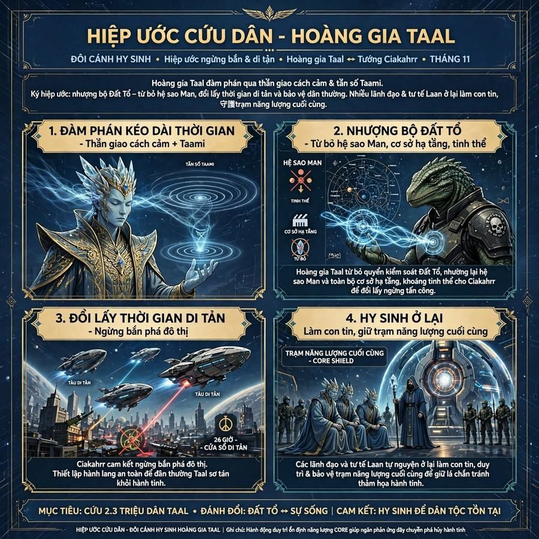
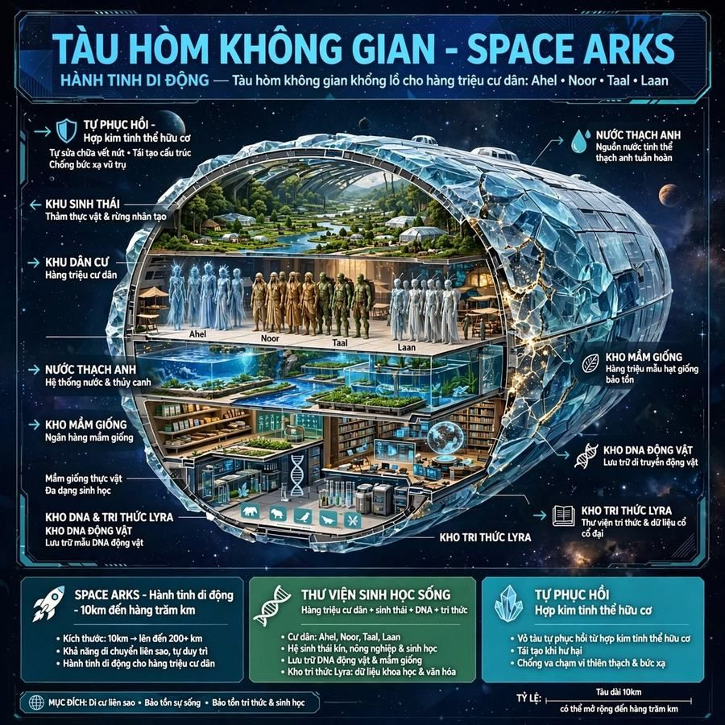
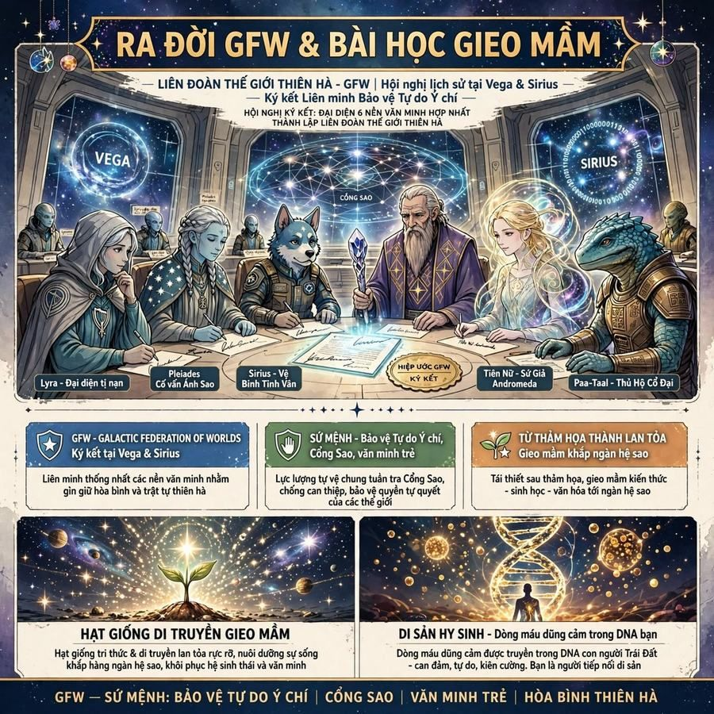
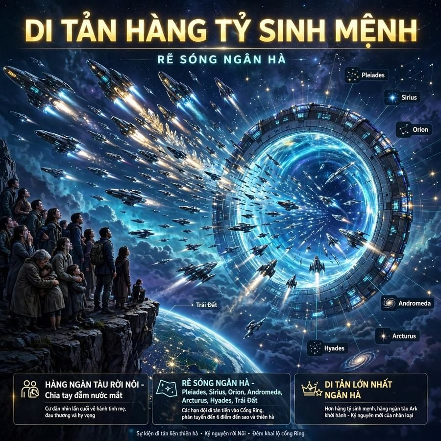

Trang chủ / Chuyên đề 1: Tiền Sử Thiên Hà / Kỳ 9
Chuyên đề 1 · Kỳ 9 / 90
THẢM HỌA CHIẾN TRANH LYRA & HIỆP ƯỚC CỨU DÂN CỦA HOÀNG GIA TAAL

Ở Kỳ 8, chúng ta đã chứng kiến bầu không khí u ám ngưng trệ khi hạm đội viễn chinh khổng lồ của Đế chế Bò sát Ciakahrr (Alpha Draconians) áp sát ranh giới chòm sao Thiên Cầm. Với tư tưởng "Chủ nhân hợp pháp duy nhất của Vũ trụ" cùng tham vọng thâu tóm Cổng Sao Tinh Vân Ring, phe Ciakahrr đã coi sự hòa bình và thái độ không vũ trang của cư dân Lyra là minh chứng cho sự yếu đuối sẵn sàng bị tiêu diệt.
Và rồi, khoảnh khắc đen tối nhất trong lịch sử tiền sử thiên hà đã chính thức sập xuống. Không có một lời tuyên chiến, không có một cơ hội thương lượng ngoại giao, đợt oanh tạc hủy diệt bất ngờ đã bùng nổ trên bầu trời các hành tinh thuộc nôi tổ tiên Lyra.
Bi kịch tàn phá 3 hành tinh Bila, Teka, Merck diễn ra khốc liệt như thế nào? Sự hy sinh oanh liệt và những nỗ lực đàm phán kéo dài thời gian của Hoàng gia Taal đã mở đường ra sao cho cuộc đào thoát của hàng tỷ sinh mệnh? Các con tàu Hòm Không Gian (Space Arks) khổng lồ đã rời nôi Lyra như thế nào? Và thảm họa đau thương này đã thức tỉnh dải Ngân Hà, dẫn đến sự ra đời của Liên Đoàn Thế Giới Thiên Hà (Galactic Federation of Worlds) ra sao?
Hãy cùng dấn thân vào Kỳ 9: Thảm Họa Chiến Tranh Lyra & Hiệp Ước Cứu Dân Của Hoàng Gia Taal để sống lại những giờ phút bi hùng nhất của tổ tiên loài người!
✦ ✦ ✦1. ĐỢT OANH TẠC BẤT NGỜ VÀ THẢM KỊCH 3 HÀNH TINH BILA, TEKA, MERCK
Cuộc tấn công của Đế chế Ciakahrr giội xuống nôi Lyra với một tốc độ và sức tàn phá vượt xa mọi khả năng hình dung của cư dân bản địa.
A. Đêm Đen Vũ Khí Plasma & Pháo Từ Trường Siêu Tần
- Trận Oanh Tạc Bất Ngờ: Hàng vạn pháo hạm hình đĩa khổng lồ và các siêu chiến hạm hình hành tinh của Ciakahrr xuất hiện đồng loạt từ các nếp gấp không gian. Họ xả xuống hàng loạt chùm pháo Plasma nhiệt độ cao, tên lửa phân hạch phản vật chất và sóng từ trường xé rách tầng điện di.
- Sự Tan Chảy Của Các Thành Phố Tinh Thể: Những công trình kiến trúc vòm thạch anh mờ, các đô thị nổi rực rỡ và những khu vườn thiên đường tại các hành tinh Bila, Teka, Merck nhanh chóng bị bốc hơi thành tro bụi. Nguồn nước khoáng tinh khiết bị nhiễm độc kim loại nặng, bầu khí quyển cháy rực trong ngọn lửa nguyên tử.
B. Bi Kịch 50 Triệu Sinh Mạng Thiệt Mạng Trong Đợt Sóng Đầu Tiên
- Sự Ngây Thơ Phải Trả Giá Bằng Máu: Do sống trong hòa bình suốt 40 triệu năm và hoàn toàn vắng bóng hệ thống phòng thủ quân sự chuyên nghiệp, cư dân tại các hành tinh tiên phong không kịp di tản.
- Thảm Kịch Diệt Vong Hàng Loạt: Trong vòng chỉ vài giờ đồng hồ của đợt tấn công đầu tiên, 3 hành tinh trù phú Bila, Teka và Merck đã bị san phẳng hoàn toàn. Hơn 50 triệu sinh mệnh Lyra (bao gồm người Ahel, Taal và Noor) đã thiệt mạng, tạo nên một đám mây chấn thương tâm lý (Karmic Shockwave) lan tỏa khắp dải Ngân Hà.

2. SỰ KHÁNG CỰ TUYỆT VỌNG VÀ SỰ BẢO VỆ CỦA CÁC ĐẤNG SÁNG LẬP (PAA-TAAL)
Đối mặt với sự hủy diệt toàn diện, tinh thần kiên cường của cư dân Lyra cùng sự can thiệp của các thế lực bảo hộ siêu chiều đã bừng tỉnh.
A. Sự Đứng Lên Của Các Dũng Sĩ Tự Vệ
- Chuyển Đổi Phi Thuyền Thăm Dò Thành Tàu Tự Vệ: Không có chiến hạm bọc thép, các dũng sĩ Ahel, Noor và Taal đã dũng cảm cải tiến các phi thuyền nghiên cứu khoa học, phi thuyền di chuyển từ trường thành các phương tiện tự vệ.
- Sử Dụng Sóng Tần Số Và Tinh Thể Chữa Lành Làm Lá Chắn: Họ sử dụng các tháp năng lượng thạch anh trên các hành tinh còn lại để tạo ra các vòm cầu bảo vệ tần số cao, đánh lệch hướng các chùm pháo Plasma và làm chậm bước tiến của hạm đội Bò sát.
B. Sự Can Thiệp Của Liên Minh Paa-Taal & Hội Đồng Tiên Nữ
- Bảo VỆ Tuyến Đường Cổ Của Cổng Sao Ring Nebula: Các Đấng Sáng Lập Paa-Taal và các sinh mệnh siêu chiều từ Hội đồng Tiên Nữ (Andromedan Council) không can thiệp trực tiếp bằng vũ khí tiêu diệt, nhưng họ đã sử dụng công nghệ siêu chiều để giữ vững sự ổn định của Cổng Sao Ring Nebula.
- Thiết Lập Hành Lang An Toàn: Họ thiết lập một "Hành lang Năng lượng An toàn" (Safe Energy Corridor) xung quanh hệ sao Man, ngăn không cho hạm đội Ciakahrr khóa chặt Cổng Sao hoàn toàn, tạo cơ hội sinh tử cho chiến dịch di tản vĩ đại.

3. HIỆP ƯỚC CỨU DÂN VÀ ĐÔI CÁNH HY SINH CỦA HOÀNG GIA TAAL
Trong giờ phút sinh tử khi các hành tinh còn lại bị bao vây khép chặt, sự lãnh đạo minh trí và tinh thần hy sinh của Chính phủ Hoàng gia Taal đã trở thành điểm tựa cho sự sống còn của gia đình hình người.
A. Cuộc Đàm Phán Kéo Dài Thời Gian Đầy Căng Thẳng
- Trò Chuyện Trực Tiếp Với Bộ Chỉ Huy Ciakahrr: Đại diện Hoàng gia Taal và Hội đồng Ngoại giao Lyra đã dũng cảm mở kênh truyền tín hiệu thần giao cách cảm và tần số Taami trực tiếp với các tướng lĩnh Hoàng gia Ciakahrr.
- Hiệp Ước Nhượng Bộ Đất Tổ: Biết rằng không thể đánh bại hạm đội Ciakahrr bằng quân sự thô tháp, Hoàng gia Taal đã đưa ra một quyết định đau đấu: Chấp nhận từ bỏ toàn bộ quyền sở hữu hệ sao Man, nhượng lại toàn bộ cơ sở hạ tầng, tài nguyên tinh thể và nôi tổ tiên cho phe Ciakahrr.
B. Sự Đổi Trác Hy Sinh Đạt Mục Tiêu Di Tản
- Đánh Đổi Lấy Thời Gian Cho Các Con Tàu Di Tản: Đổi lại sự nhượng bộ đó, Hoàng gia Taal yêu cầu phe Ciakahrr ngừng ngay việc bắn phá các vùng đô thị dân cư còn lại trong một khoảng thời gian nhất định.
- Đôi Cánh Hy Sinh Lịch Sử: Nhiều lãnh đạo Hoàng gia Taal và các tư tế Laan đã chấp nhận ở lại làm con tin hoặc ở lại bảo vệ trạm năng lượng cuối cùng cho đến phút chót, chấp nhận hy sinh bản thân để đảm bảo hàng triệu gia đình có thể an toàn bước lên các con tàu đào thoát.

4. CÁC CON TÀU HÒM KHÔNG GIAN (SPACE ARKS) VÀ CUỘC DI TẢN HÀNG TỶ SINH MỆNH
Cuộc di tản rời bỏ nôi tổ tiên Lyra được ghi nhận là cuộc di tản quy mô lớn nhất và tráng lệ nhất trong lịch sử dải Ngân Hà.
A. Kiến Trúc Vĩ Đại Của Các Con Tàu Space Arks
- Những "Hành Tinh Di Động": Các con tàu Hòm Không Gian (Space Arks) là những phi thuyền khổng lồ có chiều dài từ 10km đến hàng trăm kilômét, được đúc bằng hợp kim tinh thể hữu cơ có khả năng tự phục hồi.
- Thư Viện Sinh Học Sống Di Động: Bên trong mỗi tàu Space Ark không chỉ chứa đựng hàng triệu cư dân thuộc 4 chủng tộc (Ahel, Noor, Taal, Laan), mà còn tích hợp các khu vực sinh thái khổng lồ: Thảm thực vật, mầm giống thảo mộc, nguồn nước khoáng thạch anh, mẫu DNA của hệ động vật và các kho lưu trữ tri thức lịch sử của Lyra.
B. Hàng Ngàn Con Tàu Rời Nôi Tiến Ra Ngân Hà
- Khoảnh Khắc Chia Tay Đẫm Nước Mắt: Hàng ngàn con tàu Space Arks từ từ cất cánh từ bề mặt các hành tinh, ánh sáng tinh thể từ động cơ từ trường rực sáng cả bầu trời đêm. Cư dân ngoảnh đầu nhìn lại nôi tổ tiên lần cuối trong sự nghẹn ngào khi những thành phố thiên đường dần chìm trong khói lửa.
- Rẽ Sóng Ngân Hà Tiến Ra Các Chòm Sao: Các con tàu Space Arks tiến thẳng vào Cổng Sao Ring Nebula và các tuyến đường địa từ không gian, tỏa ra khắp các hướng của Ngân Hà: Một nhánh tiến về chòm sao Pleiades (Tua Rua), một nhánh tiến về Sirius (Thiên Lang), một nhánh tiến về Orion, Andromeda, Arcturus, Hyades và cuối cùng là Trái Đất (Terra)!

5. SỰ RA ĐỜI CỦA LIÊN ĐOÀN THẾ GIỚI THIÊN HÀ (GALACTIC FEDERATION OF WORLDS)
Thảm họa Chiến tranh Lyra đã gây ra một cú sốc điện từ dữ dội, thức tỉnh toàn bộ các nền văn minh tiến hóa trong dải Ngân Hà.
A. Sự Thức Tỉnh Về Nhu Cầu Liên Minh Quân Sự & Ngoại Giao
- Nhận Thức Rõ Nguy Cơ Bành Trướng: Các nền văn minh hình người và các chủng tộc hòa bình nhận ra rằng: Nếu họ tiếp tục sống rải rác, cô lập và không sở hữu một hệ thống liên minh bảo vệ chung, từng hệ sao một sẽ dần bị Đế chế Ciakahrr đè bẹp và nô dịch.
B. Thành Lập Liên Đoàn Thế Giới Thiên Hà (GFW)
- Sự Hội Tụ Của Các Nền Văn Minh Tiến Hóa: Tại một hội nghị lịch sử ở hệ sao Vega và Sirius, đại diện của các chủng tộc Lyra tị nạn, người Pleiades, người Sirius, người Arcturus, người Tiên Nữ cùng các Đấng Sáng Lập Paa-Taal đã chính thức ký kết thành lập Liên Đoàn Thế Giới Thiên Hà (Galactic Federation of Worlds - GFW).
- Sứ Mệnh Bảo VỆ Tự Do Ý Chí: Liên Đoàn được giao trọng trách thành lập lực lượng tự vệ không gian chung, duy trì sự an toàn cho các Cổng Sao, hỗ trợ sự tiến hóa của các nền văn minh trẻ và ngăn chặn sự bành trướng xâm lược của Đế chế Ciakahrr cùng các lực lượng tiêu cực trong Ngân Hà.

6. BÀI HỌC TÂM LINH: THỰC CHẤT CỦA SỰ DI TẢN LÀ SỰ GIEO MẦM RỰC RỠ
Nhìn lại thảm họa Chiến tranh Lyra và Hiệp ước Cứu dân của Hoàng gia Taal, chúng ta rút ra bài học tâm linh sâu sắc cho hành trình tiến hóa:
- Từ Thảm Họa Biến Thành Sự Lan Tỏa Vĩ Đại: Nhìn ở bề ngoài, Chiến tranh Lyra là một thảm kịch đau thương. Nhưng ở góc nhìn vũ trụ học cao cấp, chính thảm họa này đã buộc hạt giống di truyền hình người phải rời khỏi nôi Lyra để gieo mầm và làm rực rỡ sự sống khắp hàng ngàn hệ sao trong Ngân Hà!
- Di Sản Của Sự Hy Sinh & Lòng Dũng Cảm: Sự hy sinh của Hoàng gia Taal và các bậc tiền nhân Lyra nhắc nhở chúng ta về sức mạnh của Tình Yêu Thương và Sự Hy Sinh vì Cộng Đồng. Dòng máu dũng cảm đó vẫn đang chảy xông xáo trong từng tế bào DNA của mỗi con người Trái Đất ngày nay!

Bình luận
Chia sẻ cảm nhận, câu hỏi hoặc tài liệu đối chiếu. Không cần đăng nhập.
Đang tải…